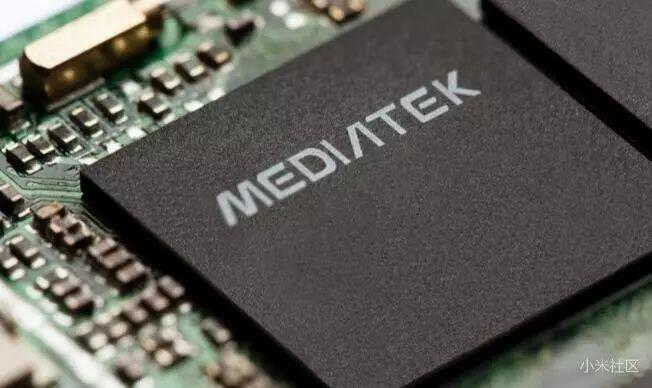

前言：
手机CPU在日常生活中都是容易被消费者所忽略的手机性能之一，其实一部性能卓越的智能手机最为重要的肯定是它的“芯”也就是CPU。
它是整台手机的控制中枢系统，也是逻辑部分的控制中心。微处理器通过运行存储器内的软件及调用存储器内的数据库，达到控制目的。
发展历史
说起手机CPU的历史，笔者给大家提一个问题：“世界上第一款智能手机是什么呢？”相信很多人的答案是爱立信的R380或诺基亚的7650，
但都不对，真正的首款智能手机是由摩托罗拉在2000年生产的名为天拓A6188的手机，它是全球第一部具有触摸屏的PDA手机，
它同时也是第一部中文手写识别输入的手机，但最重要的是A6188采用了摩托罗拉公司自主研发的龙珠(Dragonball EZ)16MHzCPU，
支持WAP1.1无线上网，采用了PPSM （Personal Portable SystemsManager）操作系统。
龙珠(Dragon ballEZ)16MHzCPU也成为了第一款在智能手机上运用的处理器，
虽然只有16MHz，但它为以后的智能手机处理器奠定了基础，有着里程碑的意义。
多核CPU
2012年下半年开始，各家手机厂商推出的主打旗舰机型多以四核处理器为卖点，多核手机似已成为主流。所谓多核手机，
指的是配备双核、四核CPU的手机，最大的优势是运算速度更快。虽然看似多核手机的市场需求激增，
但根据工信部发布的一份报告显示，2012年四核芯片在整体移动智能终端中的占比尚不足8%。
有了往年在PC端的处理器高频、数量之争的前车之鉴，很多人不看好移动处理器的数量之争。Android手机都在进行军备竞赛式的硬件升级，
动不动就在专业测评软件上跑分来一比高下。事实上，普通消费者并不需要这么高配的CPU，高配的CPU意味着高能耗。
包括高通、英特尔等芯片厂商更多的是在追求性能和功耗的整体平衡，而不是一味地追求CPU主频和核数了。
对于手机来说，大部分软件甚至在单核条件下都可以正常运行，与之相对应的，还是“大部分”——大部分软件都没有对多核并行做相应的设计优化。
这就像是你修建了四条并行铁轨，但大部分火车都在第一条上面运行。
事实上，单纯增加CPU的核心数，并不意味着能带来性能的显著提升。如果要最大化地利用多核CPU提供的计算资源，需要同时对操作系统和现有的应用做调整。
而且，多核CPU对应用性能的提升取决于同时运行多个程序或线程的能力高低。
我们看看Amdahl定律就能发现，在程序有顺序代码的情况下，性能提升带来的回报会越来越少。此外，多核芯片在发热控制上比单核芯片更难。
从技术角度看，一般在整个移动处理器中，CPU的处理任务最多仅占15%～20%，更多的任务是由GPU、DSP、GPS、调制解调器等其他组件完成的。
因此单纯强调CPU核数是片面的解读，CPU核的质量比核的数量更为重要，决定核的质量有众多因素，如架构、制程等。
CPU品牌的含义
高通骁龙处理器是Qualcomm Technologies（美国高通公司）的产品。高通骁龙处理器包括——骁龙800系列、骁龙700系列、骁龙600系列、骁龙400系列和骁龙200系列处理器。
骁龙处理器解决方案也是目前业内兼容网络最多、速度最快的产品，深受OEM厂商和消费者的喜爱。
骁龙处理器无论是在业内还是用户心中都有着较高的认可度，也有不少用户把是否搭载骁龙处理器作为购机的一项重要参考。
E联发科处理器是中国台湾联发科技股份有限公司（MediaTek.Inc）的产品。联发科是全球IC设计领导厂商，专注于无线通讯及数字多媒体等技术领域。
联发科处理器目前主要包括联发科技曦力 X 系列、联发科技曦力 P 系列、联发科技曦力A系列处理器。
